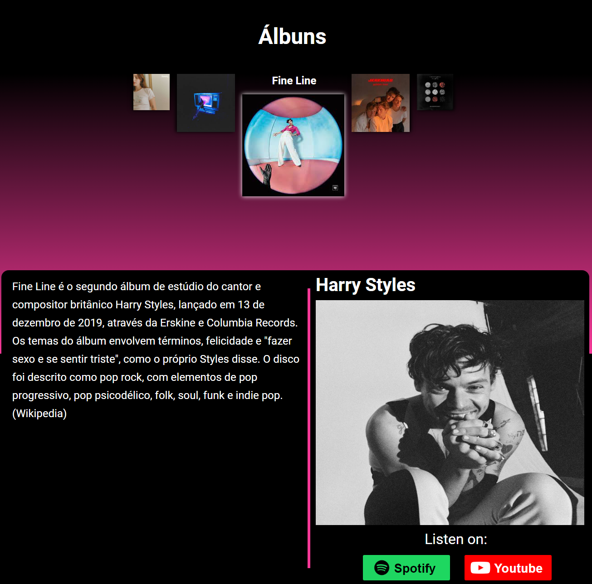

About Me :)

My name is Emerson. I'm 19 years old and I'm natural from Tietê, a small city on the state of São Paulo, Brazil. I've lived my whole live on the contryside but currently I am living in the capital, where I am studying at the University of São Paulo. I'm majoring in Social Sciences. It's a very insteresting field that comprehends Sociology, Anthropology and Political Science. I'm really keen on technology but what I really really like to study and talk about is the subjects that deal with social problems, politics, etc. so when I learned about this major, it really seemed like the perfect fit for me.
I'm really into art.
When I was younger I really didn't care about art, but as I grew I started to really apreciate art as a whole, specially paintings and architecture. Regarding paintings, my favorite movement is the European Expresionism, whereas in achitecture, the gothic style is what I find the most pleasing. Here are some of my favorite paintings:


I'm a poliglot!
At first, I thought I would only learn English, but I fell in love with the language learning process and the new experiencies that knowing a foreign language can provide to you. So, while I learned English in a language school, I started to learn French by myself in High School. Then I went on to Spanish and currently I am studying German and Italian. Learning a new language can be quite stressful but it really pays off in the end.
Here are some songs I like in German, French, Spanish and Italian.
I was a semi-professional chess player.
I started playing when I was 12 years old when got relly into the game. I continued playing with my own coach and got pretty far, I even managed to get a master title (National Master!). When I got to high-school I stopped competing because I was a bit burned out. Nowadays I still play but more casually. Here's my Chess.com profile.
I love reading.
I started off reading juvenile fiction. The first series that I became a fan of was "Diary of a Wimpy Kid". I have all the books and have read them several times. Then I had a Greek Mithology phase and obviously I read the Percy Jackson books and some others in the same theme from diferent authors. Nowadays, I still read fiction, but I also try reading some of the classics from Brazilian literature (as well as other contries) and more academic works from my area of study.
And finally...
I like coding!
I started learning about web-development when I was in high-school. I went to a school that taught us about it and found it pretty cool. I ended up moving to a different school for my last year of school but I still wanted to learn about it so I decided to study it by myself. And here am I haha. Right now, I am focusing on web development and I'm hoping to get a job on the area, but in the future I want to learn some other languages such as Java, C# and C++. I have done several projects, but the one I'm most proud of is my Albums Carousel, since it is my own design, and I think I did a pretty good job :).
